전시관안내
전시관안내
상설전시관
arrow_cool_down미래상상SF관
4차 산업혁명으로 변화될 미래세상과 우주시대를 과학기술 바탕의 상상력을 통해 체험해 볼 수 있는 전시관으로
미래과학문명(로봇, 인공지능, 에너지·환경, 생명과학, 반도체), 우주과학문명, 휴먼과 에일리언 및 미래직업세상의
4가지 테마관 등으로 구성되어 있다.
-
우주과학
cards_star
문명 -
- 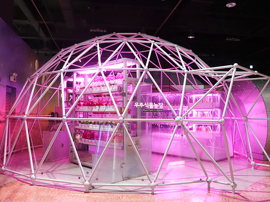 우주시대 테마관_우주식물농장
- 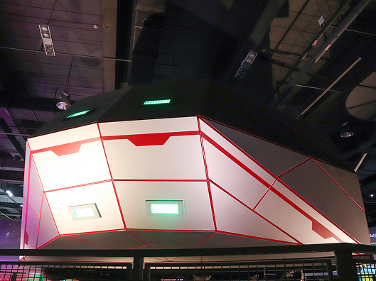 우주시대 테마관_타임머신(외형)
우주시대관은 우주도시, 우주전쟁이라는 2가지 주제로 나뉜다. 먼저 우주도시 존에서는
우주엘리베이터를 타고 수만 km 상공의 가상의 우주정거장에 도착하는 여정을 경험할 수 있다.
그리고 이 존에서는 가상의 행성도시와 우주공간의 인공도시를 건설하는 연출 장면을 볼 수 있다.
또한 VR극장에서는 16명이 동시에 우주도시를 가상현실(VR)로 경험할 수 있다.
-
휴먼과
cards_star
에일리언 -
- 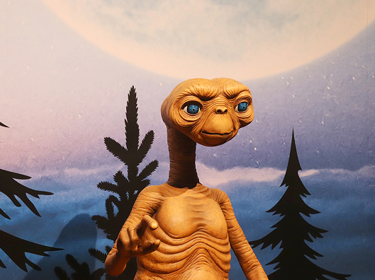 휴먼과 에일리언 테마관_ET
- 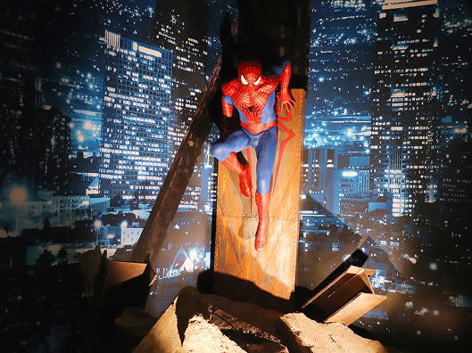 휴먼과 에일리언 테마관_스파이더맨
인간은 과학기술의 발달로 신체적·지능적 능력이 크게 향상되었다.
과거 히어로가 가졌던 능력이 이제는 현실로 펼쳐진다. 스파이더맨의 거미줄과 아이언맨의 아크원자로 더 이상 꿈이 아닌 현실이다.
수천만 개의 태양계를 가진 수천만 개의 은하로 구성된 우주. 이 넓고 넓은 우주에 우리와 같은 생명체가 존재할까? 과학의 발달은
생명의 근원을 향해 점점 다가가고 있다. 우리는 또 다른 생명체와 함께 공존할 수 있을까?
유아체험관
대상 : 미취학어린이
어린이들의 안전을 위해 시간별 입장인원을 제한하고 있습니다.
1회 운영시간은 60~80분으로 제한되며 사전 예약 후 이용할 수 있습니다.
-
자연
cards_star
이해하기 -
- 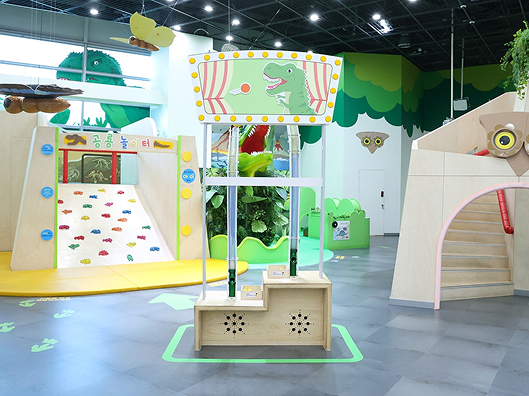 보노보와 함께해요
- 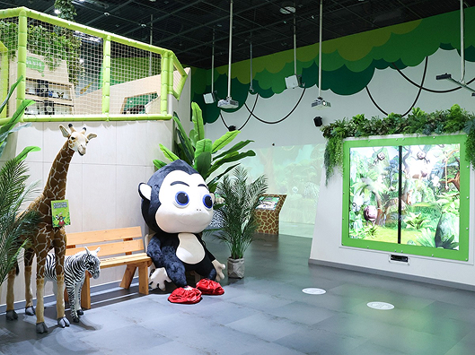 보노보와 함께해요
전망대 2층과 전망대 뒤편에는 멸종위기종인 보노보를 포함하여
현재 자연에서 볼 수 있는 다양한 동식물을 접할 수 있도록 구성되어 있으며,
공룡미로와 공룡 대 탐험 공간을 통해서는 과거 멸종된 공룡들을 통해 과거에 살았던 동물에도 관심을 갖도록 한다.
-
우리동네
cards_star -
- 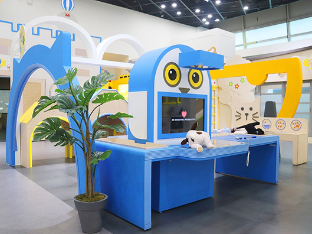 동물병원친구들
- 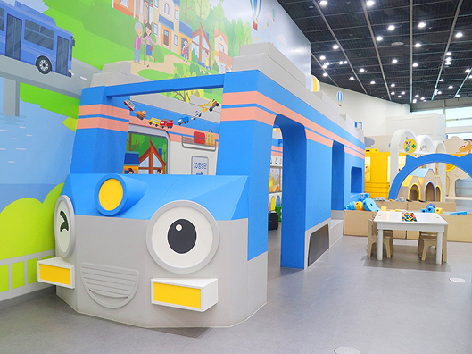 동물병원친구들
우리 동네의 다양한 공간을 체험하는 공간으로 크게 기차, 동물병원, 영화관, 음악교실로 구성되어 있으며,
체험하면서 자신이 살아가는 동네에 흥미를 느끼고 스스로 주도하는 역할놀이를 할 수 있다.
과학탐구관
생활 속 과학원리를 이해하고, 호기심을 유발할 수 있는 '과학원리체험 코너'와
일상에서 경험할 수 있는 자연의 현상 속에서 통합적으로 문제를 찾고 해결하는 탐구 과정을 경험해보는
'빛·공기·물·땅'의 총 5개 코너에 총 79종의 전시물을 선보이고 있다.
-
생활 속
cards_star
'과학원리
체험' -
- 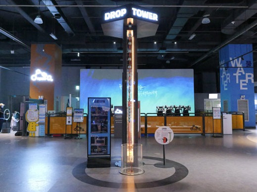 드롭타워
- 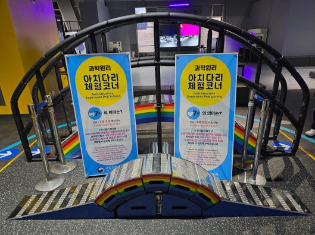 아치다리
‘드롭타워‘로 무거운 탑승체가 떨어질 때 안전하게 감속하는
Z
자석브레이크의 원리를 체험해보자.
또한 ‘아치다리’를 조립하고 건너보며 힘의 분산을 직접 경험해 보자.
-
우리가
cards_star
느끼는
'공기' -
- 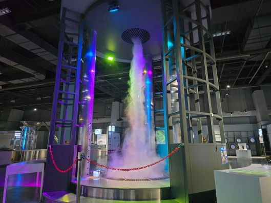 토네이도는 어떻게 발생될까?
- 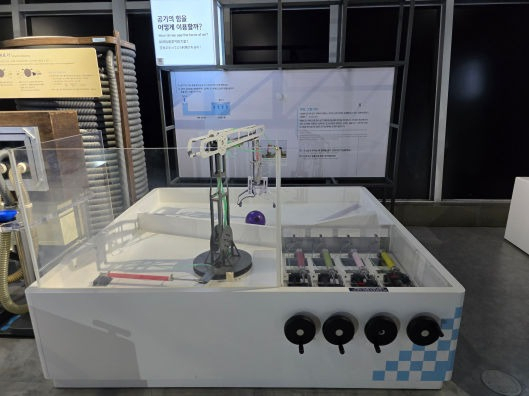 공기의 힘을 어떻게 이용할까?
토네이도를 직접 발생시켜 원리를 알아볼 수 있는 ‘토네이도는 어떻게 발생될까?’와
작은 힘으로도 큰 힘을 만들어낼 수 있는 파스칼의 원리를 담은
‘공기의 힘을 어떻게 이용할까?’로 공기와 관련된 과학 체험을 해보자.
첨단기술관
우리 생활 속에서 사용되어 온 과학의 진보된 기술을 전시한 공간이다.
항공, 우주, 에너지, 소재 분야의 총 130건의 전시물로 구성되어 있다.
이 곳에서는 ‘우주여행극장’등 53건의 체험물을 이용할 수 있다.
다양한 분야를 다루는 만큼 한 눈 팔지 말고 곳곳에 설치된 전시물을 살펴보도록 하자.
-
AI 기술과
cards_star
모션 감응 LED,
생활 속 기술을
만나다 -
- 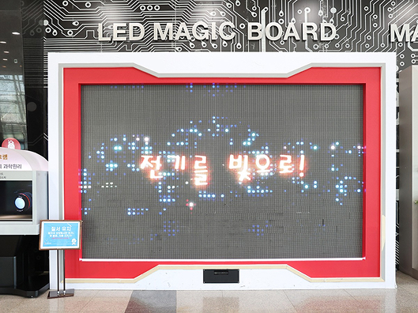 LED 게임
- 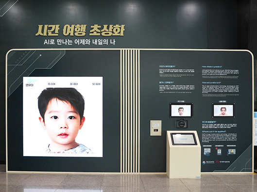 시간 여행 초상화
첨단기술관을 들어가기에 앞서 우리 생활에 밀접한 기술을 체험형 전시물로 만나볼 수 있다.
'시간 여행 초상화'는 AI 나이 변환 기술을 사용하여 사람의 얼굴을 인식하고 학습한 내용을 바탕으로
나의 과거와 미래 모습을 예측해 준다.
또한, 대상의 동작에 반응하는 'LED MAGIC BOARD'로 전기와 빛의 변환에 대한 직관적 체험을 해 볼 수 있다.
-
석탄을 입다,
cards_star
옷에서 석유의
향기가 난다 -
- 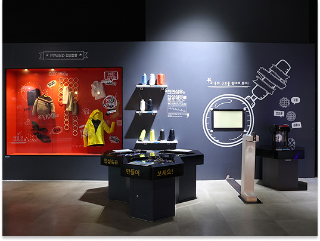 뜨개질
- 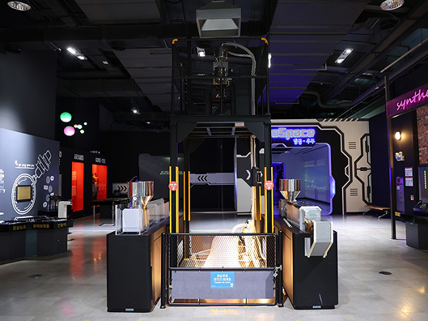 방사기
옷은 무엇으로 만들까? 옷의 재료인 섬유는 목화나 누에, 양털을 통해 얻기도 하지만, 현대에는 대부분 석유로부터 얻는다.
석유화학기술을 통해 고분자로 중합된 합성물질이어서 ‘합성섬유’라고 부른다.
이들은 때론 비단처럼 부드럽고, 강철만큼 강하며, 솜털보다 가볍기도 하다. 만약 우리가 합성섬유를 만들지 못했다면 이 세상은 어떠했을까?
그는 불행히도 찬란한 미래를 보지 못한 채 세상을 떠났지만, 석탄과 석유로부터 만들어진 나일론은 인류 문명사에 가장 혁신적인 발명품으로 남았다.